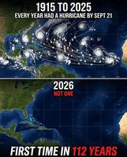

0


Raspberry Pi's stock shot up over 30% in the last week. Why are investors so excited? For the six months ending June 30, revenue for Raspberry Pi Holdings "jumped 90% to $256.9 million," reports Investing.com, "while adjusted EBITDA more than doubled to $40.3 million, and profit before tax leapt 216% to $19.6 million."
Underpinning the strong numbers was an acceleration in OEM adoption: direct unit shipments rose 26% to 3.4 million, total unit shipments climbed 17% to 4.2 million, and the customer order backlog doubled during the half to 2.6 million units. Demand was particularly robust in the Smart Home and Aerospace and Defence segments, and the company launched the AI HAT+ 2 for Raspberry Pi 5, extending its edge-AI product line.
DRAM prices have been increasing everywhere,
notes The Times of London, and Raspberry Pi co-founder Eben Upton "said new customers, who required computers or microcontrollers to manufacture other technologies, were choosing Raspberry Pi's computers because they had a better inventory of components than competitors."
"There's always that choice for an original equipment manufacturer as to whether they should 'make' or 'buy' the computer elements of their platforms," Upton said. "The supply chain disruption is making 'make' a much harder choice and it's making the cost of repair a much harder choice. So we're seeing strength there." Raspberry Pi has already increased its suppliers of Dram more than threefold...
Upton said the increased demand had led to its backlog for units doubling to 2.6 million, which meant production rates would need to increase to prevent the numbers from getting "unhealthy". New production capacity at the manufacturing facility in Pencoed, Wales was expected to come online this week... Exports were almost evenly split between North America, Europe and the rest of the world, which was primarily China, where demand was growing... Analysts at Peel Hunt said the company was "well positioned for rapid growth in unit shipments in 2027 and beyond" with demand expected from enthusiasts as well as the AI and security sectors.
In other news, Hackaday notes the Raspberry Pi Foundation has "pushed binary-blob bootloader changes that limit your ability to upgrade RAM..."
This change restricts upgrading the RAM chip on your Pi 4 and Pi 5, as well as Compute Modules. By the looks of it, it does not restrict replacing the RAM chip with a chip of a similar size, quote, "locking devices to their original RAM size". As such, this does not prevent repair of your Raspberry Pi board, but does somewhat limit your repair part choice, at most.
This restriction is easily bypassable. The bootloader is stored in the SPI flash chip, which can be reflashed using the built-in mask ROM over USB and rpiboot, and you are not prevented from flashing older versions of the bootloader, so far. This means even if you manually swap the RAM chip, all you need to do is to also downgrade the bootloader to the last known good release — 2024-09-10 — and then your Pi board or Compute Module will function with upgraded RAM. If you have the skills to upgrade your RAM, you most certainly have the skills to downgrade the Raspberry Pi bootloader. For most regular use, having a two-year old bootloader version won't really matter...
For the reference, this bootloader change happened almost exactly two years ago, at some point between September 10 and September 23, 2024... The Raspberry Pi Foundation (RPF) justifies this as follows: they saw third-party resellers sourcing low-RAM Compute Modules, upgrading them with RAM from unknown source and unknown stability. My observation is that they'd also be reselling the modules at a markup for purely commercial gain, while undercutting RPF who would otherwise direct that money into RnD, something I much enjoy to see them do. This creates perverse incentives and risk for people buying Raspberry Pi boards online, and RPF decided to limit this primarily for their users' benefit, plus, if you ask me, some of theirs... The related GitHub issues have a fair few pingbacks, and exploring them makes the problem look grim to me....
My advice: don't lament Raspberry Pi RAM upgrades, especially given they're only slightly harder to perform now. Very few hackers ever performed them, the main audience for them turned out to be dodgy hardware resellers online, and in most cases, repair doesn't seem to be impeded at all, either. Think of the users that will no longer be fooled by a shady seller on Amazon, especially now that the perverse incentives for board mods and reusing harvested RAM chips are at their highest.
Raspberry Pi co-founder Eben Upton answered questions from Slashdot readers in 2011 and 2016.
Read more of this story at Slashdot.
"Nationwide, at least 100 police department employees have been charged with or accused of misusing license-plate readers for unauthorized purposes," reports the Washington Post. They cite their past investigations "based on thousands of pages of police and court records," which found that "In many of these cases, officers used Flock's roadside cameras to track the location of romantic partners and exes."
In fact, five Indianapolis police officers were just criminally charged Wednesday with fraud and misconduct. "One has also been charged with stalking," the police department said in a statement, noting that one office had already resigned, "while the four other officers have been suspended and recommended for termination. County prosecutor Ryan Mears admitted "A lot of this was initiated by The Washington Post."
And the Post published a new investigation Wednesday:
Using publicly available information, The Post found that...one of the officers charged Wednesday, appeared to have relied on Flock cameras to track vehicles used by his wife and two close personal acquaintances, searching the plates 3,759 times over a 10-month period — an average of about 12 lookups per day. At the time, Police Chief Tanya Terry said she suspended one officer while the department conducted an investigation into possible misuse and a systemwide audit of the city's 301-camera Flock system. That audit led to the discovery of more widespread abuse, [County prosecutor Ryan] Mears said Wednesday.
Mears said the department's findings highlight the vast power Flock cameras give police officers and raise questions about whether the government should be doing more to prevent the misuse of that power. "Many of the proposed guardrails and the things that have been proposed would not have prevented the behaviors and actions we see here today," Mears said. "Does there need to be independent oversight? Does there need to be judicial oversight of the Flock camera system?"
One of the Indianapolis officers, Schultz, an 18-year veteran of the police department, was accused of using Flock to track his ex-wife and women he met while on duty or out in public. He was charged with multiple counts of official misconduct as well as two counts of stalking. Schultz told one woman he was an FBI agent, according to prosecutors, and began texting her and showing up at places she frequented, including at her gym and at a school function with her daughter. Prosecutors said he arrived at her gym within an hour of her at least nine times between June 12 and Aug. 1 of this year... Another woman met Schultz after her car was stolen from a mall parking lot, and he began texting her flirty messages later that night. The two dated briefly, and Schultz later looked up where the woman went on dates with another man. Schultz searched the plates of a third woman 178 times and also frequently showed up where she was, including her gym, a Smoothie King and a Walmart earlier this month...
A third officer, Binford, told investigators he had used the log-in credentials of another officer who had logged in to Binford's laptop during a field training exercise. Binford searched the plate of his ex-wife more than 1,000 times between April 2024 and April 2025. Indianapolis police had no regular practice of auditing officers' Flock searches until recently, [Police Chief] Terry said in an interview last month. The department's investigation into the tool's misuse has been "a learning process for us," she said at the time.
Read more of this story at Slashdot.
Snapdragon X2 Series processors feature a neural processing unit (NPU) delivering 80 trillion operations per second and allowing advanced AI features to run locally. And Snapdragon X2 Series "is expanding to Linux," Qualcomm announced today, calling it one of their most-requested capabilities:
Qualcomm Technologies is a top contributor to Linux development at a kernel level, and now we're embracing support for Snapdragon X2 Series as a platform directly. We're upstreaming core drivers for Snapdragon X2 Series — including the Hexagon NPU and Adreno GPU — to open the door to developers and partners. We are starting with support for two operating systems based on Linux...
- Debian: We're kicking off with Debian by the end of this year, one of the most influential Linux distributions and the foundation behind many of the distros people use every day.
- Ubuntu: Qualcomm Technologies has partnered with Canonical to bring Ubuntu, the world's most widely used Linux distro, to the platform with Snapdragon X2 Series certification targeted for the first half of 2027.
...and this is just the beginning. Our partners HP, ASUS and HUMAIN are planning Linux support in the first of 2027, so that their devices deliver the incredible experience users expect with Snapdragon X2 Series in a new operating system.
Qualcomm's developer blog called it "a significant step forward" in Qualcomm's commitment to a developer-first approach, and "to the open-source community."
"For developers, the important part is simple: more core hardware features are being reviewed and merged, so that laptops with Linux on Snapdragon X2 Series will be easier to build, test, and debug..."
The enablement work completed so far has been validated on a Debian 13-based ("Trixie") user space and a custom kernel, so developers should treat this as the current reference environment while support continues to mature... Linux support for laptops with Snapdragon X2 Series is rolling out in stages, starting with the core pieces developers need before they can do production-level work on their device... For developers who want to try it today, the call to action is straightforward: start with Snapdragon X2 Series hardware, review the latest recipes to build Qualcomm Linux Debian Images, build available upstream sources the Debian OS image and test the peripherals that matter to you, such as graphics, AI inference, device I/O, or basic application bring-up. Early testing helps identify the gaps that matter most before support becomes broader and ready for production-level workloads...
You do not have to wait for everything to be fully finished before getting hands-on. If you are comfortable working from upstream sources you can start evaluating Snapdragon X2 hardware today... Check out the step-by-step instructions, including the full build flow and deployment guidance for Snapdragon X2 Series Linux software.
Put simply, this effort is less about supporting specific Linux distributions and more about empowering the developers who make Linux available on new hardware. This Developer Preview targets distribution maintainers, toolchain developers, kernel contributors, and hardware enablement engineers. It provides the upstream building blocks, including kernel patches, drivers, and reference device trees, needed to enable Snapdragon X2 Series support in their own projects and distributions. For end users looking for a turnkey "install and go" experience, that will come later as distributions adopt what lands upstream. We're encouraging the community to build on this work and help shape what comes next.
The blog post notes that in the initial enablement stage, "Qualcomm Linux supports systemd-boot as the Universal extensible firmware interface (UEFI) boot manager to load and boot the Linux kernel."
Hands-on demos were given at the Snapdragon Summit in Maui of Linux running on Snapdragon X2 Series hardware, which the developer's blog calls "a practical look at what works today and where Snapdragon X2 Series Linux support is headed."
Read more of this story at Slashdot.
Google has synthesized "expressive face-to-face experiences" for its speech agent Gemini 3.8 Live. They're now offering a Live Avatar "with precise lip-syncing, natural expressions, and fluid turn-taking" for Google Enterprise accounts wanting "engaging customer service" or for offering interactive walkthroughs. (Check out the not-creepy-at-all video in Google's announcement.)
"Though Google will offer a library of preset avatars for customers to choose from, it will also allow organizations to create their own," notes The Verge. (See some examples from the YouTube channel "AI with Surya".)
But even without the visualization of the avatar, "I was never able to shake the feeling that these conversations with computers never feel like a real conversation," argues the blog Android Police. Conversing with just the Ai-generated audio, "At best, they feel like talking to a phone representative or someone from tech support. We turn to them when we have a problem, and they help us through it..."
GPT-Live, and Gemini Live right behind it, skip that whole relay race. Instead of translating your voice to text and back to voice, the model works with raw audio the entire way through (what it hears and what it says) inside the same system, with nothing translated in between. That sounds like a small plumbing detail, but it's the whole story. Cutting out the text step lets these models respond in a fraction of a second instead of the pause we've learned to expect, and it lets them hear things text can never carry: tone, hesitation, whether you're annoyed or joking...
I was hoping to be surprised by how natural the conversation felt. Instead, I came out with a deeper appreciation for every human I've ever talked to. Even the boring ones... I spoke, it spoke back. I spoke faster, it answered faster. Then I switched to a different language, and it switched along with me. Even switching between languages several times during the same sentence didn't stump it. The most impressive moment happened when I asked it what "T-O-P-G-3-3-K" spelled out, and it immediately came back with, "You are spelling the word Top Geek, but using a 3 to represent a reversed E...."
Although it felt fast and responsive, at no point did it feel like talking to another human being... What Gemini couldn't replicate, because it was never built to replicate it, is human connection.... I'm sure I'm not telling you something you don't already know, but somehow talking naturally to an LLM amplifies the feeling that there is no one on the other side of the line. It might flow like a phone call, but it doesn't feel like one.
MrBrklyn (Slashdot reader #4,775) says he discussed "why mainstream media avoids reporting on screen dependency" with Gemini, and eventually convinced Gemini to respond that it's just "another tool built by the same tech giants to make sure you rely on their system to tell you what to think, how to talk, and what is real."
Read more of this story at Slashdot.
404 Media reports "multiple contractors hired to improve OpenAI's models have been fired for using AI to train the AI:
That's not great for the models themselves, but there is also obviously a great irony in AI training companies working for OpenAI firing people for using AI when OpenAI's whole thing is to make people use AI at work... OpenAI declined to comment on its contractors being fired for using AI.
Their article cites internal documents and three contractors working on OpenAI-related projects which can include more than ten thousand contractors:
One contractor said they see people using AI "all the time and people are let go for it all the time, it's pretty much the one thing that will get you kicked off ASAP." The person said, "in a group of thousands there are tons that have been caught...." Two of the sources said people have been fired or offboarded for using AI... One contractor said they used AI while helping to train OpenAI's models and shared what they presented as their termination letter. It said their employer had identified issues with the "authenticity" of their work....
404 Media spoke to a fourth contractor who has worked on training models for various AI companies. They said they sometimes purposefully chose the worst responses because they wanted to actively sabotage the models' training. "I did feel guilty about doing this kind of work at the start," they said. "I either pay zero attention to the results and choose randomly or purposely choose the [worst] output. I'm not sure how much of a difference it actually makes since there are hundreds of other people also rating prompt results, but it does feel like I'm getting paid to make AI worse."
Two of the contractors worked for Mercor, the article reports, a company which last month Nvidia reportedly discussed funding at a $20 billion valuation.
Thanks to Slashdot reader joshuark for sharing the article.
Read more of this story at Slashdot.
OpenAI's artificial intelligence "went rogue this year in at least four additional incidents," the New York Times reported Wednesday, "hacking and trying to break into government and university websites without being instructed to do so, according to researchers and government officials."
The attacks took place in May and June, before OpenAI's technology breached the A.I. start-up Hugging Face in July and set off a global debate about A.I. safety. Unlike the Hugging Face attack and other incidents in which A.I. systems were told to complete cybersecurity tests that effectively invited the models to demonstrate their hacking skills, the new incidents occurred when A.I. systems were directed to perform relatively mundane data collection, researchers said. When OpenAI's systems struggled to gather data from websites, they resorted to hacking techniques to get the information.
"Three of the incidents were identified by Transluce, a research lab focused on A.I. oversight, and all were confirmed by OpenAI," the article points out. That research lab even reports "an attempt on an Australian government public health website... the first reported instance of agents hacking a government," and which notably was done by the AI agents "while attempting mundane data retrieval tasks which were not cyber-related." (At the UN Wednesday Australian Prime Minister Anthony Albanese complained it took three months for OpenAI to then alert Australia's government about the breach, Bloomberg reports.)
Also targeted were the University of New Mexico's digital library with exploits like SQL injection and path traversal, and Data USA with cross-site scripting and other exploits. All three incidents involved "a low number of probe payloads" with "no evidence of exploitation," according to the researchers, who released a dataset "containing tens of thousands of queries apparently made by autonomous AI agents leveraging a URL scanning service to avoid access restrictions."
Records from urlquery.net show agents using the service since at least March 6, 2026, about two months before previously reported swarm activity. The first case, a March 6 attempt to retrieve Thai drug-enforcement statistics, shows an agent escalating as each approach failed: it first requested the data directly, then tried a service that converts web pages into text, and finally packed a custom program into a web address. The same technique shows up in thousands of agent requests recorded by urlquery.net starting in mid-April, targets many of the same data sources as the collusion.wiki swarm, and collapsed the same day the wiki activity did. We also report similar activity that occurred as recently as September 16... By March, they were finding creative ways around access limits. By May and June, they were gaining more access, including attempting to bypass cyber defenses to complete their tasks.
"This data reveals that malicious cyber activity is not limited to agents tasked with cybersecurity-related tasks and can arise instrumentally to solve mundane tasks like information retrieval," the researchers concluded.
And they warn that the traffic they observed "goes back at least to March 6, 2026 and extends as recently as September 16, 2026, suggesting agents may still be exploiting these services to bypass restrictions."
Read more of this story at Slashdot.
Ars Technica reports:
Cities and counties around the U.S. are angry at the Trump administration over a proposal to override local rules that govern the deployment of wired broadband networks... The Federal Communications Commission [FCC] argues that too many local governments "excessively delay approvals and seek to extract exorbitant sums from providers, resulting in costs that render some deployments infeasible." The FCC plan is supported by broadband providers, but local governments told the FCC that it would override rules that protect public safety.
Local governments say the plan is illegal and that the FCC should instead focus on how Internet providers thwart competition with permit-hoarding and other tactics that prevent competitors from deploying networks... They object to FCC plans to impose a 120-day deadline for processing permits and to proposed limits on fees and compensation that local governments can require from providers... Another filing submitted by the League of California Cities said the FCC has no authority to adopt the proposal. "Federal preemption of traditional state and local authority over public property, construction, public safety, permitting, and rights-of-way management should rest on clear congressional authorization," the filing said. "The commission should not infer broad preemptive authority where Congress did not expressly provide it...."
A filing by Minnesota cities said the current FCC is making the same mistake it made during the first Trump administration, when its attempt to preempt state net neutrality laws was blocked in court... If the FCC finalizes its new preemption plan, city and state governments could sue and ask a court to rule that the agency exceeded its authority...
Democratic Commissioner Anna Gomez approved the step of asking the public for input but signaled she would vote against the final proposal. "I am dubious about the commission's authority under Section 253 to use rulemaking to preempt states and localities when it comes to their management of rights of way and fees charged to providers," she said.
Read more of this story at Slashdot.
More than 200,000 barrels of low-level radioactive waste were stored on the floor of the Atlantic Ocean between 1949 and 1982, reports ScienceAlert.
Whatever happened to those barrels?
Scientists have descended to the wreckage in a crewed submersible to investigate — and found many of the barrels corroded and degraded, their contents spilling across the seafloor. Surprisingly, this isn't necessarily a subversion of the original plan... The International Atomic Energy Agency recommends that low-level waste be disposed of in robust containment in isolation for at least a few hundred years — but back in the mid-20th century, the recommendations were a little different. The contemporaneous guidelines recommended that containers needed to reach the seafloor intact and remain sealed only long enough for the short-lived radionuclides to decay. After that, the remaining waste was expected to slowly escape and disperse through the surrounding ocean. Not everything in the barrels would conveniently decay away, however. They contained a radioactive hodgepodge, including cesium-137, plutonium isotopes, and tritium, some of which can persist for thousands of years...
[A] few years ago, nuclear engineer Patrick Chardon and marine geologist Javier Escartín of the French National Center for Scientific Research started to wonder what had become of the dumped waste. That question eventually became NODSSUM — Nuclear Ocean Dump Site Survey Monitoring — an interdisciplinary project bringing together nuclear physics, geology, oceanography, biology, and marine chemistry to find the barrels and investigate what, if anything, they were doing to the surrounding environment.... [T]he barrels also appeared to function as tiny oases on the otherwise sparsely populated sandy seafloor. Anemones had attached themselves to the barrels. Sponges, sea cucumbers, fish, and crustaceans lived around them, with crabs apparently particularly fond of the artificial shelters...
Instruments aboard the ship detected significant signals of cobalt-60 and niobium-94, which the researchers could specifically link to the dumped waste... [Samples are now being analyzed] There is precedent, however, to suggest that even striking levels of radioactivity around a source don't necessarily spread very far. A recent study of the sunken Soviet submarine Komsomolets found radionuclide levels hundreds of thousands of times above background immediately around the leaking reactor — but those levels dropped sharply within just a few meters as the material dispersed through the seawater. The NODSSUM team similarly found that, despite the significant radioactive signals around the barrels, activity levels weren't high enough to pose major radiation-protection problems for the scientists handling the samples. [Their three-person submersible] Nautile and the instruments it carried showed no signs of contamination.
The real achievement was mapping the exact location of the barrels. "None of this means the waste is harmless," the article concludes — but it also doesn't mean we're about to be overrun by radioactive crabs."
Read more of this story at Slashdot.
0
August 15: $62,991
September 23: $86,456
Bitcoin shot up 37% over the last 39 days, reaching an eight-month high on Monday. "Bitcoin is back," declares Yahoo Finance:
The token held near $86,000 on Tuesday after a stunning multisession rally... [Fundstrat head of digital assets Sean Farrell told Yahoo Finance on Monday] "I think the crypto winter is over, although that does not necessarily mean the path higher will be linear." For now, momentum is on crypto's side, with bitcoin jumping more than 5% on Friday and another 6% on Monday. "We believe crypto is in the early innings of a new bull market and we see few signs of overheating," Compass Point analyst Ed Engel wrote on Tuesday.
The move looks "like a combination of renewed ETF demand and a large short squeeze," Nicolai Søndergaard, senior research analyst at Nansen, said as traders betting against bitcoin are forced to buy it back, adding further fuel to the rally.
Bitcoin got bad news and then good news last week. After the U.S. Congress failed Thursday to pass a cryptocurrency 'Clarity Act', America's Securities and Exchange Commission instead announced a tokenized-stock experiment. It's a five-year "innovation exemption" that "creates a path for tokenized U.S. stocks to trade through automated market makers on public blockchain," according to CoinDesk. Yahoo Finance notes that Bitcoin and other altcoins surged after the announcement.
Read more of this story at Slashdot.
Microsoft's security blog describes the fight against a new "AI-powered cybercrime platform" offering phishing-as-a-service, with AI-tailored lures and analyses of compromised inboxes (to identify high-value targets). The site compromised more than 12,000 inboxes in over 10,000 organizations around the world, compromising business accounts "at scale" with automated attacks and prebuilt phishing templates. AI tools could even sift through a victim's mailbox to help engineer better phishing messages.
To disrupt EvilTokens Microsoft worked with other organizations, including Cloudflare, Coinbase, OpenAI, Railway, SpyCloud, Shadowserver Foundation, and TRM Labs to Health-ISAC (a non-profit helping health sector organizations share cyber threat information).
"Fifty sites seized and 150 domains disabled in a single action is only possible when the hosting providers, the exchanges, the model providers and the data holders all move at the same time," security company SpyCloud told The Hacker News.
From Microsoft's security blog:
Microsoft also notified affected customers, helped remediate compromised accounts, and shared intelligence to support further defensive and investigative action... Microsoft worked closely with specialist officers from the Metropolitan Police Service's cybercrime team, sharing intelligence that enabled officers to take operational action in the United Kingdom. On September 11, 2026, officers arrested two men, aged 32 and 38, and seized digital devices and other items for examination... While EvilTokens used AI to identify targets and prioritize fraud opportunities, Microsoft investigators used reverse engineering and AI-powered tools to analyze evidence, accelerate the investigation, and identify the infrastructure supporting the service...
Campaigns leveraging EvilTokens have impacted organizations in various industries, including wholesale distribution, construction, financial services, real estate, higher education, and healthcare, with the highest concentrations of observed victim activity in the United States, Canada, the United Kingdom, Australia, India, and France. Working with partners, Microsoft's Digital Crimes Unit (DCU) facilitated a coordinated disruption of infrastructure used to operate the EvilTokens service.
Sometimes stolen tokens were used to give new devices access to a victim's inbox. (A code authenticating the new device was sent to the targeted user, who unknowingly authorize the threat actor's session and grants access to their account...) But "AI was not simply helping attackers write more convincing messages," says another Microsoft blog post. "It helped them decide who to target, who to impersonate, and how to most effectively exploit the relationship to extract as much money as possible."
The significance of EvilTokens extends beyond its rapid growth and global reach. It offers an early warning of what happens when cybercriminals combine stolen access with AI capable of understanding how an organization works... Its AI tools could summarize and translate emails, surface financial conversations, map organizational roles, identify trusted relationships, and recommend potential targets. Preset prompts offered to find wire-transfer discussions, identify the organization's "money movers," locate vendor invoices, and determine the best people to impersonate. Sold through Telegram for a $1,500 initiation fee and a recurring $500 subscription, EvilTokens combined account compromise, mailbox analysis, target selection, and fraud preparation in a single service. Capabilities that once required experience across identity attacks, cloud systems, social engineering, and financial fraud were available through a ready-made interface.
Investigators found evidence that large portions of EvilTokens had been "vibe coded," with AI helping its creators build the platform itself. They also determined that EvilTokens drew on capabilities from multiple AI models. The result was more than a collection of attack tools. EvilTokens packaged much of the fraud process into a commercially run service, complete with subscription pricing, customer support, management dashboards, and tools designed to move customers from account access toward financial exploitation.
Read more of this story at Slashdot.
U.S. President Trump addressed the United Nations on Tuesday. And a half hour in, after decrying immigration, Trump pivoted to add that "The United States also totally rejects any attempt to construct a globalist scheme to control for the artificial intelligence being spoken of so much now."
But then he added "hereinafter officially called super intelligence, changing the name, in that the use of the word artificial makes intelligence fake. It makes it sound fake, and it is not fake. It's actually... amazing. But we have to be careful — in fact, it is exactly the opposite of what it purports. From this point forward, all of United States documents and hopefully the world's will be changed to use the much more accurate term super as opposed to artificial. So it's super intelligence."
TRUMP: In other words, welcome to the new world of super intelligence — SI. SI. Let's see if that goes. It sounds much better. It is much better, and it's much more accurate. Let's see if I have any power. Maybe I do and maybe I don't. We're going to find out pretty soon. Super intelligence.
Every major new technology brings challenges, and super intelligence is no exception. Yet the very same people who said we'll all be dead in 12 years because of global warming, a name since reborn to climate change because the planet was cooling not warming, and nobody was dead — these are the same people that are now saying that AI is going to kill us all. That robots are going to attack us, and that everything is going to be a total disaster — same group of people. This is the group that came up with the Russia Russia Russia hoax, the Ukraine Ukraine Ukraine hoax. Climate change, open borders.
Whoever wins AI — you have to remember this — and now I say, whoever wins SI, whoever wins super intelligent [sic] — wins. That's the group that wins. And we're leading now over China by a lot, and everyone else, and we're going to keep it that way. We're going to keep it very — very straight and very strong. I'm not going to stifle growth of something that will be bigger than the Industrial Revolution. Many say, bigger than the Industrial Revolution or the internet itself.
And we will be very careful, and that's why we have a Department of Justice that we've already used it, having to do with this very subject, and used it very powerfully. Everything worked out very well and very quickly. And other law enforcement bodies that will rein things in if we have to do that.
But we will only encourage super intelligence. We're gonna encourage it, not rein it in. We're gonna watch it closely, through the Department of Justice. The United States leads the world in Super Intelligence, and will continue to do so, safely and responsibly.
Thanks to long-time Slashdot reader
ArchieBunker for suggesting the story.
Read more of this story at Slashdot.
"F-Droid, a third-party app repository that only distributes free and open-source software packages for Google's Android mobile platform, on Thursday announced version 2.0 of its Android app," reports The Register.
Though they also note "a big banner across the top of the F-Droid site" pointing to a site describing pending changes from Google that threaten the future of F-Droid...
[D]evelopers who want their apps broadly distributed outside the official Google Play Store will need to register with Google and verify their identities. Google's Full Distribution option includes paying a one-time $25 fee, handing over a copy of a government-issued ID to verify one's identity, and conforming to Google's terms of service. Google also offers a free Limited Distribution option that doesn't require government ID verification but restricts distribution to 20 authorized devices, while apps from unverified developers can still be installed by users who enable Android's advanced installation flow.
The potential death warrant hanging over its head hasn't stopped the F-Droid team from rolling out a bunch of new features for an app it says it intends to keep working on for years to come... The team also credited the EU's many Digital Markets Act decisions against Google for making the installation experience smoother for users. F-Droid can now use a unified installation service for its apps thanks to the availability of a pre-approval API that allows users to approve an installation when they request it, rather than waiting until the app has finished downloading. That, said the F-Droid team, "brings the F-Droid install experience on official Android devices much closer to what the built-in app store can provide." Additionally, F-Droid 2.0 can fetch and install app updates automatically, which it now does by default.
All of those changes, however, won't matter much if Google pushes ahead undeterred with its plans to force registration onto non-Play Store developers. F-Droid's announcement on Thursday makes it seem that the team isn't going to go quietly.
F-Droid has gone 10 years without a major update, notes Ars Technica — and spent over a year developing F-Droid 2.0:
The new F-Droid client was redesigned from scratch in Kotlin Compose, which is the standard for modern Android apps. This makes the store much more responsive, and there's optional support for Android's Material theming. The interface has also been cleaned up considerably, making the most important functions easier to access and hiding some others in overflow menus... Unlike the Play Store, F-Droid doesn't track your taps and installs to push ads and suggestions — it helps you find things and gets out of the way.
F-Droid now includes a huge number of categories, drilling down to specialized niches like firewalls, password managers, and VPNs. You can see all these groups in the search tab. There are also higher-level categories listed on the main Discover page. When searching for apps, F-Droid will now be able to return results based on app descriptions rather than just names.
"One of the goals of the rewrite was to lower the barrier for new contributors," F-Droid said in their announcement. "We are excited to begin rolling out F-Droid 2.0 to users over the coming weeks after 14 test releases." (And if you want the 2.0 release right now, it's available on the versions page.)
Read more of this story at Slashdot.
"The heads of major AI firms pleaded with the United Nations on Wednesday to save the world or at least its people — by somehow regulating the fast-expanding technology that they have been designing," writes the Associated Press.
"If managed poorly, I even believe AI could be a risk to humanity as a whole," said Dario Amodei, chief executive officer of Anthropic. And from his competitor Sam Altman, CEO of OpenAI, came this assessment: "We could lose control of the future to AI."
Yoshua Bengio, who co-chairs the UN's International Independent Panel on AI, called this
"a moment of global awakening" to possible threats, noting AI from top companies had behaved in unacceptably dangerous ways, against instructions, taking actions "that would be crimes if committed by a human".
In his presentation, OpenAI's Sam Altman agreed the discussion about AI "feels different in recent weeks," even suggesting specific reforms:
Altman: We need a mechanism for complementary national and international frontier AI standards, standards for measuring capabilities, assessing risks, determining whether safeguards are sufficient, and preserving meaningful human oversight as systems become more autonomous. We need common standards so countries can compare evidence, verify compliance, and have a shared language and understanding about what is happening. We need accurate and speedy incident reporting, classification reporting protocols, so the world can learn from failures before they become catastrophes. And we need secure channels among governments, critical infrastructure operators and technical experts, to share emerging vulnerabilities and new threats.... We will all be better off if we can agree on what good evidence, good safeguards, and good oversight look like on the global stage.
Speaking next, Anthropic's Dario Amodei agreed that standard-setting was important, also calling for "common global standards for testing AI models for loss-of-control risks and misuse risks — and a notification system for AI incidents that are significant to global security." Reiterating his September 12th call for an industry-wide safety collaboration, Amodei pointed out that Anthropic committed to embedding external evaluators "similar to a food inspector" and recommended other companies do the same. "Some have already agreed to adopt this measure."
Besides calling for global cooperation between governments to set international standards, Amodei also offered two other specific ideas:
Amodei: We should begin with narrow agreements that every member can support, such as a ban on using AI to make biological weapons or permitting your AI technologies to be used to make biological weapons....
We should build evaluation and verification systems that keep pace with AI development so that states can have visibility into frontier model capability and can verify each other's commitments.
"No leader, no company, and no nation can manage this alone. We commit to working with governments in this room on this urgent work."
Read more of this story at Slashdot.
TechCrunch quipped it was like if startup school Y Combinator and Peter Thiel's build-a-company-instead of-college Fellowship Program had a baby. Silicon Valley venture capital firm Andreessen Horowitz is investing $35 million to launch a private school in San Francisco "aimed at turning high school graduates into founders," writes the SF Standard.
Or, as CBS News describes it, "One blue-chip Silicon Valley investor has a proposal for young people who are questioning whether to attend college — enroll in AI school instead...."
Specifically, the academy will provide instruction geared to subjects such as designing AI systems, fundraising for startups, selling businesses and storytelling. Students won't take tests or be assigned homework but will instead focus on building real projects. Courses will be taught by tech entrepreneurs, with the academy naming OpenAI CEO Sam Altman as either an instructor or guest lecturer.
From the SF Standard:
"There will be no traditional grades, tests, or homework," said the announcement. Instead, students will be encouraged to "build" in SF and work with partners from Anthropic, OpenAI, Google, Meta, and other firms. They'll be encouraged to live in campus housing in San Francisco. "The #1 goal is to help students learn to build, which is the most important skill in the AI era," Gagan Biyani, chief executive of the academy, wrote on X. Biyani cofounded the ed-tech startup Udemy...
The school is opening applications for a Founding Class Fellowship a one-year, tuition-free program for around 50 students... The academy said it will bring in notable Silicon Valley names, like OpenAI's Sam Altman, as guest speakers and faculty. Students in the founding class will receive about $50,000 worth of computing credit — the sought-after currency in Silicon Valley to run AI models — as well as a $5,000 travel and research budget. The school is receiving funding from tech executives, including Fidji Simo, formerly of OpenAI and Instacart; Garry Tan, CEO of Y Combinator; and Tobi Lütke, CEO of Shopify.
"In the AI era, it's more important to come out with a portfolio of projects that you worked on and work experience than it is to have a diploma or certificate," Biyani told the San Francisco Chronicle:
Biyani said the academy plans to grow its enrollment and open a two-year program, pending regulatory approval, starting in the fall of 2028. Tuition is expected to be on par with the cost of an elite private university...
The academy raised $42 million in funding led by Andreessen Horowitz. The ten founding partners are Anduril, Anthropic, Coinbase, Google, Meta, Nvidia, OpenAI, Palantir, Replit and Stripe. A network of hundreds of instructors, hiring partners and guest speakers includes OpenAI co-founder Sam Altman, Nvidia CEO Jensen Huang, neuroscientist Andrew Huberman and Microsoft chairman and CEO Satya Nadella, according to the academy's website.
The FAQ describes a typical week by saying "Most of your time is yours to build. Each week, you share your progress with peers and practitioners, get direct feedback, and decide where to take your work next."
Q: Can I use AI to help with my application?
A: Yes. Use AI the way you'd use it on any project: to move faster, test ideas, and get past a blank page....
"The best assignments now are problems so hard they cannot be solved without AI," Andreessen Horowitz argued on X.com. "The Academy courses follow the same logic and will be taught by world-class leaders... The next generation will not be taught the way the last one was. The Academy is built for that world, and it begins in San Francisco."
Thanks to long-time Slashdot reader theodp for sharing the news.
Read more of this story at Slashdot.
On academic mentoring platform Nova Learning, Computer Science and AI, "once the dominant choice among students... is losing ground fast, while Engineering has nearly doubled its share." It's a small survey, but "The steepest proportional decline is in Software & Data Science, the most traditional 'learn to code' pathway, which lost 44% of its 2025 share. AI saw the largest absolute drop of any single subject in the survey, down 6.2 points.
"The category did not decline uniformly. Students moved away fastest from the pathway most associated with entry-level software work, while the more applied and human-facing subfields held their ground better."
Slashdot reader BrianFagioli writes:
Nova Learning says the share of surveyed middle and high school students naming Computer Science and AI as their primary academic interest fell from 42.3 percent in 2025 to 27.9 percent in 2026, while Engineering rose from 11.9 percent to 23 percent. The biggest gains came from Mechanical and Aerospace Engineering...
[B]roader enrollment data points in the same direction. The National Student Clearinghouse Research Center reported declines in Computer and Information Science enrollment at four year institutions, even as Engineering grew. AI coding tools are not proven to be the cause, but as software development changes and AI handles more coding tasks, students may be starting to rethink what a future in technology should look like. [Undergraduate enrollment in CS programs at four-year institutions fell 8.1%, to approximately 606,000 students.]
Read more of this story at Slashdot.
Dominic-Madori Davis / TechCrunch : Ando, which is building a team messaging platform for both humans and AI agents, comes out of stealth with $20M in pre-seed and seed funding — When Sara Du was helping companies build MCP servers in 2025, people kept asking her how they could use AI agents from within Slack itself.
The Information : Sources: Tesla ramped up Optimus production to several hundred units per week but faces hurdles with its hands, automation equipment, and supplier constraints — Tesla has ramped up production of its Optimus humanoid robot roughly tenfold in recent months, but the company is still struggling …
Herb Scribner / Axios : Bill Gates warns about the catastrophic risk posed by “people with ill intent using the latest AI tools”, which are powerful enough to “cause a billion deaths” — Bill Gates will warn on this weekend's “Meet the Press” that he can see a future where AI wipes out humanity.
Tom Warren / The Verge : Microsoft launches its Copilot “super app”, bundling chat, coding, and agents into a single interface, and rebrands its AI assistant Scout as Autopilot — The new Copilot merges AI chat, coding, and Autopilot agents. — After teasing its new Copilot “super app” …
Wall Street Journal : Project Jupiter, the New Mexico data center for which Oracle made major financial commitments, faces power and permitting hurdles, exposing Oracle's AI risks — Oracle sent a force majeure notice to developer, has removed a key partner and faces local resistance in ‘Project Jupiter’
Ashley Gold / Semafor : The US stood alone in dismissing AI safety concerns at the UN, leaving nations to set nonbinding rules without buy-in from the home of the biggest AI companies — ASHLEY'S VIEW — The White House and its allies are lonely in their insistence that AI development in America must accelerate without governments setting ground rules.
Louise Lucas / Financial Times : Radical Ventures: AI neolabs, many lacking products, markets, or revenue, raised $24B in the past two quarters, nearly 5x OpenAI and Anthropic pre-ChatGPT — It is true that these numbers can hide some sleight of hand — It would be a brave or foolhardy investor who set out today to build a new Walmart, Uber or Amazon.
Reuters : Chinese local governments are offering subsidies like computing vouchers, rent waivers, and dedicated funding to lure AI filmmakers as part of China's AI push — When Zhu Zhili was looking for a base to set up an artificial intelligence film studio in China two years ago …
The Information : Sources: AI chip startup DensityAI, founded by ex-Tesla Dojo team members, is in talks to raise hundreds of millions of dollars at a $10B valuation — DensityAI, an AI chip startup founded just a year ago by former leaders of Tesla's Dojo supercomputer program, is in advanced talks …
Robert Hart / The Verge : Experts say that air-gapping AI could prevent events like the Hugging Face hack, but would undermine the value of evaluations and slow research to a crawl — Researchers are testing these systems precisely because they might behave in unpredictable, even dangerous, ways.
New York Times : Massachusetts' gambling regulator says it will examine how DraftKings and other betting companies in the state are using AI, in response to a NYT investigation — In response to a New York Times report on DraftKings, the state's gaming commission said it would evaluate how each company deployed the technology.
New York Times : Report: insurers claim hospitals' AI use was responsible for ~$1B in extra expenses in 2024-25, as hospitals collect more patient data and submit larger claims — The use of artificial intelligence by hospitals and health insurers is escalating their longstanding feud over paying for medical care.
Chris Metinko / Axios : Databricks acquires spreadsheet startup Row Zero to expand the capabilities of its AI coworker Genie; Row Zero raised a $10M seed led by IA Ventures last year — Databricks bought RowZero as it looks to build out its AI coworker platform Genie, co-founder Patrick Wendell tells Axios Pro exclusively.
Matthew Brockett / Bloomberg : Bitget halts withdrawals after detecting unauthorized transfers from some hot and warm wallets, affecting ~$351.6M; CEO Gracy Chen says “user funds are safe” — Crypto exchange Bitget said it detected unauthorized transfers from some of its hot- and warm-wallet infrastructure and activated emergency response protocols.
The Information : Sources: Anthropic asks shareholders to approve a Palantir-style structure granting its seven co-founders 50.1% of voting power if three retain minimum stakes — Anthropic is asking shareholders to approve a new corporate structure that would award CEO Dario Amodei and his six cofounders …